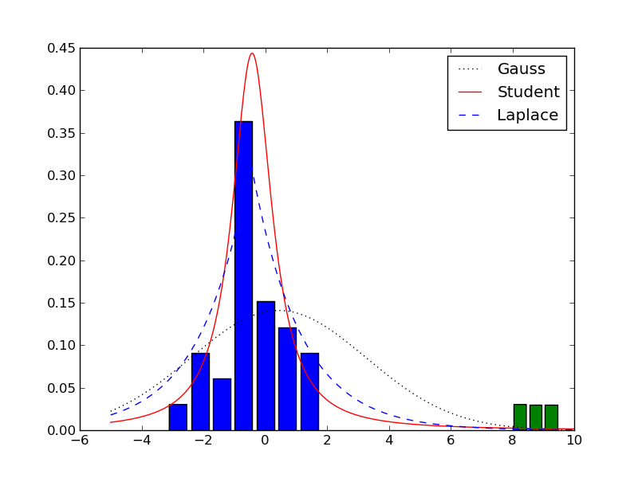
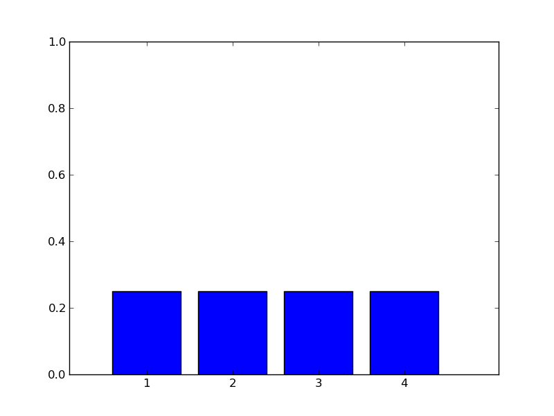
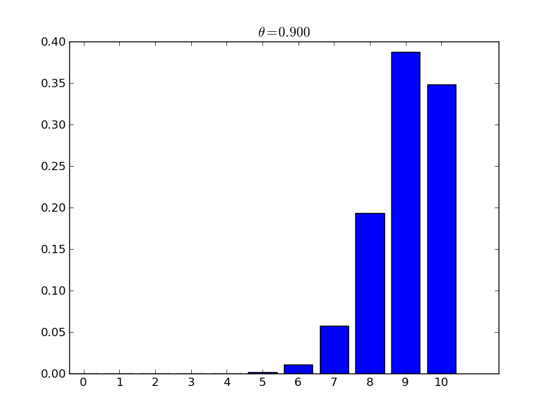
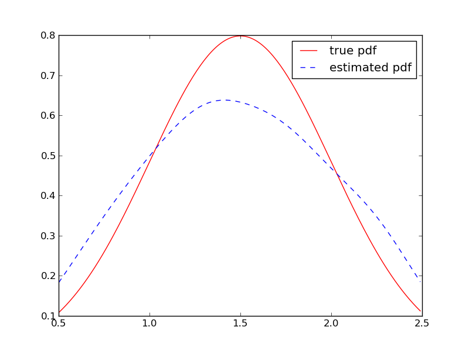
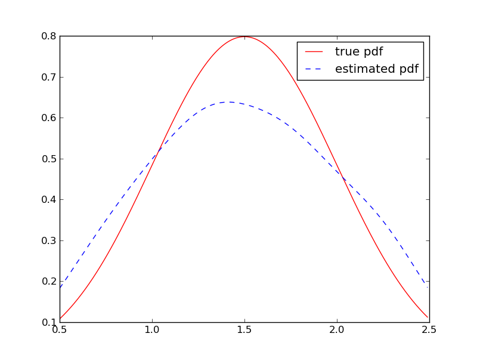
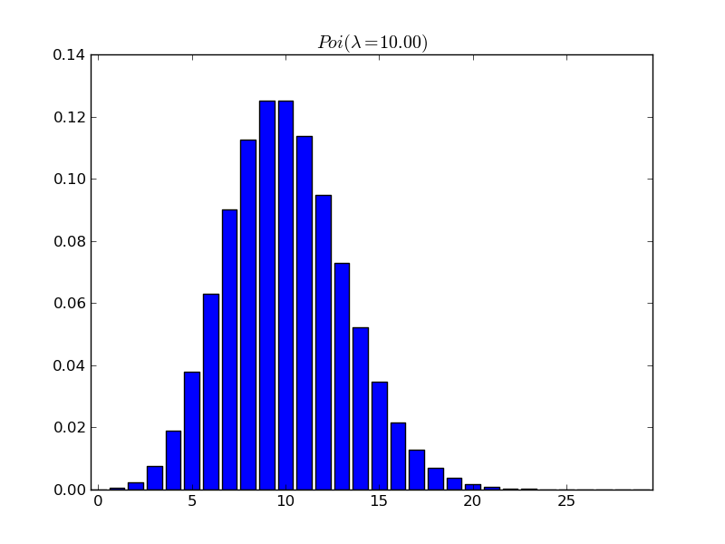

ch02¶
robustDemo¶

#!/usr/bin/env python
import numpy as np
import matplotlib.pylab as pl
from scipy.stats import t, laplace, norm
a = np.random.randn(30)
outliers = np.array([8, 8.75, 9.5])
pl.hist(a, 7, weights=[1 / 30] * 30, rwidth=0.8)
#fit without outliers
x = np.linspace(-5, 10, 500)
loc, scale = norm.fit(a)
n = norm.pdf(x, loc=loc, scale=scale)
loc, scale = laplace.fit(a)
l = laplace.pdf(x, loc=loc, scale=scale)
fd, loc, scale = t.fit(a)
s = t.pdf(x, fd, loc=loc, scale=scale)
pl.plot(x, n, 'k>',
x, s, 'r-',
x, l, 'b--')
pl.legend(('Gauss', 'Student', 'Laplace'))
pl.savefig('robustDemo_without_outliers.png')
#add the outliers
pl.figure()
pl.hist(a, 7, weights=[1 / 33] * 30, rwidth=0.8)
pl.hist(outliers, 3, weights=[1 / 33] * 3, rwidth=0.8)
aa = np.hstack((a, outliers))
loc, scale = norm.fit(aa)
n = norm.pdf(x, loc=loc, scale=scale)
loc, scale = laplace.fit(aa)
l = laplace.pdf(x, loc=loc, scale=scale)
fd, loc, scale = t.fit(aa)
t = t.pdf(x, fd, loc=loc, scale=scale)
pl.plot(x, n, 'k:',
x, t, 'r-',
x, l, 'b--')
pl.legend(('Gauss', 'Student', 'Laplace'))
pl.savefig('robustDemo_with_outliers.png')
pl.show()
quantileDemo¶


#!/usr/bin/env python
import numpy as np
import matplotlib.pylab as pl
from scipy.stats import norm
x = np.linspace(-3, 3, 100)
y = norm.pdf(x)
f = norm.cdf(x)
pl.figure()
pl.plot(x, f)
pl.title('CDF')
pl.savefig('quantileDemo_cdf.png')
pl.figure()
pl.plot(x, y)
pl.savefig('quantileDemo_gaussDemo.png')
x_sep_left = norm.ppf(0.025)
x_sep_right = norm.ppf(0.975)
x_fill_left = np.linspace(-3, x_sep_left, 100)
x_fill_right = np.linspace(x_sep_right, 3, 100)
pl.fill_between(x_fill_left,
norm.pdf(x_fill_left),
color='b')
pl.fill_between(x_fill_right,
norm.pdf(x_fill_right),
color='b')
pl.annotate(r'$\alpha/2$', xy=(x_sep_left, norm.pdf(x_sep_left)),
xytext=(-2.5, 0.1),
arrowprops=dict(facecolor='k'))
pl.annotate(r'$1-\alpha/2$', xy=(x_sep_right, norm.pdf(x_sep_right)),
xytext=(2.5, 0.1),
arrowprops=dict(facecolor='k'))
pl.ylim([0, 0.5])
pl.savefig('quantileDemo.png')
pl.show()
discreteProbDistFig¶

#!/usr/bin/env python
import numpy as np
import matplotlib.pylab as pl
pl.bar(np.arange(4) + 0.5, [0.25] * 4)
pl.axis([0, 5, 0, 1])
pl.xticks(np.arange(4) + 0.9, np.arange(4) + 1)
pl.savefig('discreteProbDistFig_a.png')
pl.figure()
pl.bar(0.5, 1)
pl.axis([0, 5, 0, 1])
pl.xticks(np.arange(4) + 0.9, np.arange(4) + 1)
pl.savefig('discreteProbDistFig_b.png')
pl.show()
studentLaplacePdfPlot¶


#!/usr/bin/env python
from scipy.stats import t, laplace, norm
import numpy as np
import matplotlib.pylab as pl
x = np.linspace(-4, 4, 100)
n = norm.pdf(x, loc=0, scale=1)
l = laplace.pdf(x, loc=0, scale=1 / (2 ** 0.5))
t = t.pdf(x, df=1, loc=0, scale=1)
pl.plot(n, 'k:',
t, 'b--',
l, 'r-')
pl.legend(('Gauss', 'Student', 'Laplace'))
pl.savefig('studentLaplacePdfPlot_1.png')
pl.figure()
pl.plot(np.log(n), 'k:',
np.log(t), 'b--',
np.log(l), 'r-')
pl.legend(('Gauss', 'Student', 'Laplace'))
pl.savefig('studentLaplacePdfPlot_2.png')
pl.show()
betaPlotDemo¶

#!/usr/bin/env python
from scipy.stats import beta
import numpy as np
import matplotlib.pylab as pl
x = np.linspace(0, 1, 100)
aa = [0.1, 1., 2., 8.]
bb = [0.1, 1., 3., 4.]
props = ['b-', 'r:', 'b-.', 'g--']
for a, b, p in zip(aa, bb, props):
y = beta.pdf(x, a, b)
pl.plot(y, p, lw=3, label='a=%.1f,b=%.1f' % (a, b))
pl.legend(loc='upper left')
pl.savefig('betaPlotDemo.png')
pl.show()
binomDistPlot¶

#!/usr/bin/env python
from scipy.stats import binom
import numpy as np
import matplotlib.pylab as pl
for p in [0.25, 0.9]:
pl.figure()
probabilities = binom.pmf(np.arange(11), 10, p)
pl.bar(np.arange(11), probabilities)
pl.xticks(np.arange(11) + 0.4, np.arange(11))
pl.title(r'$\theta = %.3f$' % p)
pl.savefig('binomDistPlot_%s.png' % p)
pl.show()
mcEstimatePi¶

#!/usr/bin/env python
import numpy as np
import matplotlib.pylab as pl
p = np.random.rand(5000, 2) * 4 - 2
inner = np.sum(p ** 2, axis=1) <= 4
pl.figure(figsize=(10, 10))
pl.plot(p[inner, 0], p[inner, 1], 'bo')
pl.plot(p[~inner, 0], p[~inner, 1], 'rD')
pi_estimate = np.sum(inner) / 5000 * 4
print('the estimated pi = %f' % pi_estimate)
print('the standard pi = %f' % np.pi)
err = np.abs(np.pi - pi_estimate) / np.pi
print('err = %f' % err)
pl.savefig('mcEstimatePi.png')
pl.show()
mcAccuracyDemo¶


 



#!/usr/bin/env python
from scipy.stats import gaussian_kde
from scipy.stats import norm
import matplotlib.pylab as pl
import numpy as np
x = np.arange(0.5, 2.5, 0.01)
for size in [10, 100, 1000]:
samples = norm.rvs(loc=1.5, scale=0.5, size=size)
y = norm.pdf(x, loc=1.5, scale=0.5)
#draw pic
pl.figure()
pl.hist(samples, normed=True, rwidth=0.8)
pl.plot(x, y, 'r')
pl.xlim(0, 3)
pl.title('n_samples = %d' % size)
pl.savefig('mcAccuracyDemo_%d.png' % size)
#draw kde pic
kde = gaussian_kde(samples)
y_estimate = kde(x)
pl.figure()
pl.plot(x, y, 'r', label='true pdf')
pl.plot(x, y_estimate, 'b--', label='estimated pdf')
pl.legend()
pl.savefig('mcAccuracyDemo_kde%d.png' % size)
pl.show()
poissonPlotDemo¶

#!/usr/bin/env python
from scipy.stats import poisson
import numpy as np
import matplotlib.pylab as pl
for l in [1.0, 10.0]:
pl.figure()
probabilities = poisson.pmf(np.arange(30), l)
pl.bar(np.arange(30), probabilities)
pl.xticks(np.arange(0, 30, 5) + 0.4, np.arange(0, 30, 5))
pl.title(r'$Poi (\lambda = %.2f)$' % l)
pl.savefig('poissonPlotDemo_%s.png' % l)
pl.show()
gammaPlotDemo¶

#!/usr/bin/env python
from scipy.stats import gamma
import numpy as np
import matplotlib.pylab as pl
x = np.linspace(0, 7, 100)
for a in [1, 1.5, 2]:
y = gamma.pdf(x, a)
pl.plot(x, y)
pl.legend(['a=%.1f' % a for a in [1, 1.5, 2]])
pl.savefig('gammaPlotDemo.png')
pl.show()
bernoulliEntropyFig¶

#!/usr/bin/env python
import numpy as np
import matplotlib.pylab as pl
def entropy(p):
"""calculate the entropy"""
h = -p * np.log2(p) - (1 - p) * np.log2(1 - p)
return h
x = np.linspace(0.01, 0.99, 100)
y = entropy(x)
pl.plot(x, y)
pl.xlabel('p(X=1)')
pl.ylabel('H(X)')
pl.savefig('bernoulliEntropyFig.png')
pl.show()
gaussPlot2Ddemo¶


#!/usr/bin/env python
import numpy as np
import matplotlib.pylab as pl
from mpl_toolkits.mplot3d import Axes3D
def mvn2d(x, y, sigma):
xx, yy = np.meshgrid(x, y)
u = np.array([np.mean(x), np.mean(y)])
xy = np.c_[xx.ravel(), yy.ravel()]
sigma_inv = np.linalg.inv(sigma)
z = np.dot((xy - u), sigma_inv)
z = np.sum(z * (xy - u), axis=1)
z = np.exp(-0.5 * z)
return z / (2 * np.pi * np.linalg.det(sigma) ** 0.5)
fig = pl.figure()
ax = Axes3D(fig)
x = np.linspace(-5, 5, 100)
y = np.linspace(-5, 5, 100)
sigma = np.array([[1, 0], [0, 1]])
z = mvn2d(x, y, sigma)
xx, yy = np.meshgrid(x, y)
#plot figure
ax.plot_surface(xx, yy, z.reshape(100, 100),
rstride=1, cstride=1, cmap=pl.cm.hot)
pl.savefig('gaussPlot2Ddemo_1.png')
pl.figure()
pl.contour(xx, yy, z.reshape(100, 100))
pl.savefig('gaussPlot2Ddemo_2.png')
sigma1 = np.array([[2, 0], [0, 1]])
z = mvn2d(x, y, sigma1)
pl.figure()
pl.contour(xx, yy, z.reshape(100, 100))
pl.savefig('gaussPlot2Ddemo_3.png')
sigma2 = np.array([[1, 1], [0, 1]])
z = mvn2d(x, y, sigma2)
pl.figure()
pl.contour(xx, yy, z.reshape(100, 100))
pl.savefig('gaussPlot2Ddemo_4.png')
pl.show()